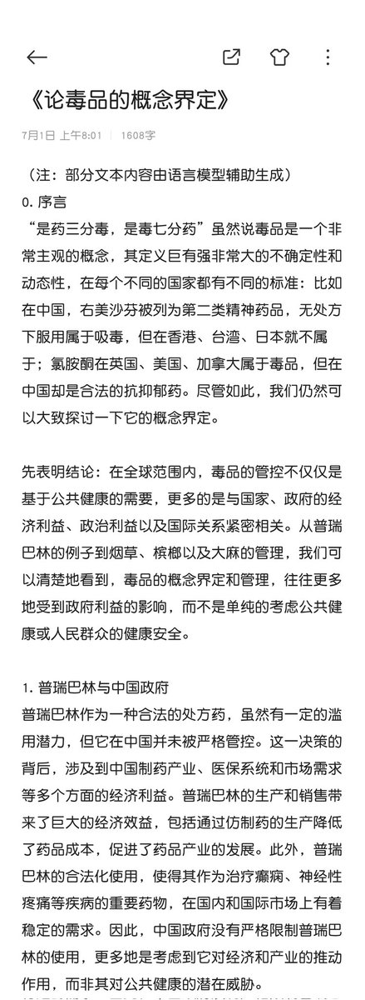
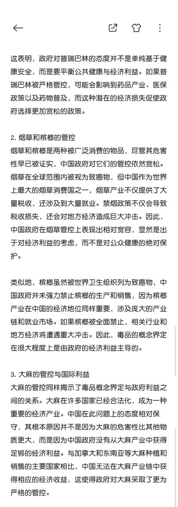
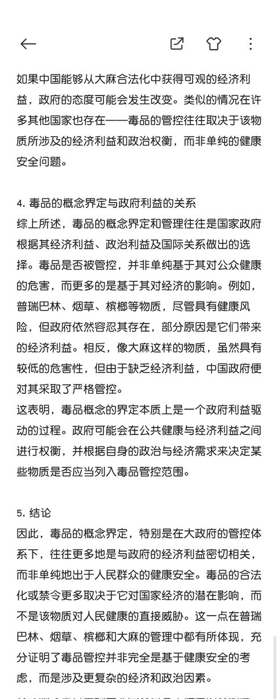

冰棍好烫喵 🍥🧊🍔🍟🍜🍣🍙🍧🍮🍩☕️💊🤤
@bghtnya
@cuichuna7



冰棍好烫喵 🍥🧊🍔🍟🍜🍣🍙🍧🍮🍩☕️💊🤤
@bghtnya
“毒品”的概念界定更多只是对大政府有没有利益关系，而并非出于对人民群众健康的考虑
详见下文——《论毒品的概念界定》 https://t.co/2n72O6Yryf
grace.time☃︎
@cuichuna7
其实黄赌毒和黑恶势力捆绑是刻板映像，欢乐斗地主算不算赌😁烟酒算不算毒？再进一步所有可以快乐的东西都算毒吗？那抗抑郁药和抗焦虑药算不算？理论上监管和引导到位反而不会产生黑恶势力（比如参考烟酒）😸可能会有人说毒伤大脑，但沉迷黄色和烟酒也伤害大脑，放开类似烟酒那样反而并不会有很多人沉迷